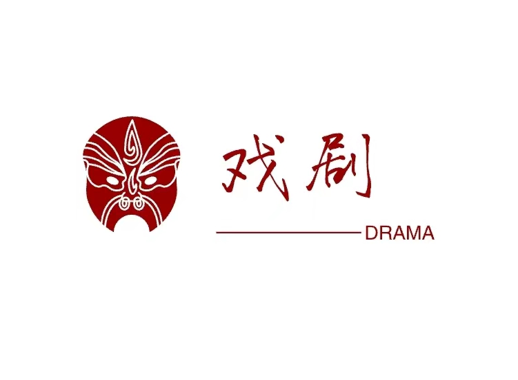

您的位置:首页>越剧 梁山伯与祝英台
祝英台：祝家庄小姐，才华横溢。梁山伯：饱读诗书对英台痴心一片。马文才：出身名门，对英台痴情，但心狠手辣。荀巨伯：是英台好友，风趣幽默
祝员外之女英台女扮男装去万松书院求学，途遇梁山伯，一见如故，结拜为兄弟。 同窗三年山伯不知英台女儿身，英台因接到家信促其速归不便明言，将白玉扇坠请师母转交山伯，作爱情信物。山伯知情后，赶去祝家，英台已许配给马文才，她至死不从，山伯气急病亡。马家来娶亲，英台浑身缟素，经山伯墓前，坟墓爆裂，她跃入坟中，墓复合拢，梁祝化为蝴蝶。